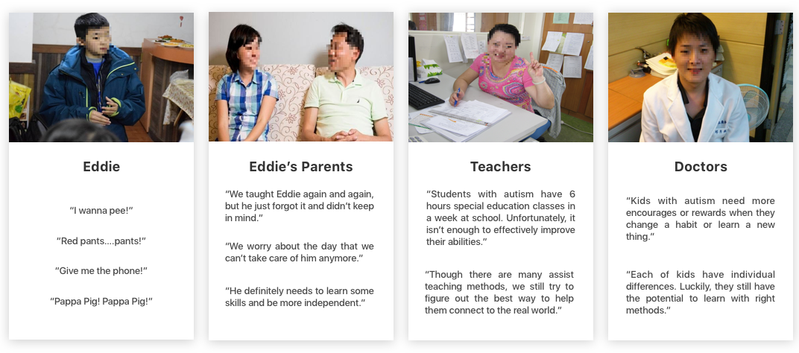

Discover
As a Member of the Autism Services Kids Club
While volunteering, I came to realize that mainstream therapy for children with autism in Taiwan still relies on traditional means, such as face-to-face instruction and medical treatment. I felt strongly that alternative learning methods like educational apps should be leveraged, since many kids showed interest in interacting with digital devices.
As a UX designer, I keep reflecting on the question: how might we help children with autism and their families to ease the daily struggle and improve their life? It inspired me to conduct a user experience design project to improve this situation.


The Autism Services Kids Club at NTU
Design Process

Interview
Understand the problems and difficulties
To understand the difficulties that kids with autism and parents faced in daily life, we started with user interviews, including 5 kids, 8 parents, 2 teachers and 3 doctors.

Key Findings from Interviews:
1. Many kids show interest in interacting with mobile phones or computers.
2. Kids often forget or lose their stuff. Thus, caregivers must check and remind him/her many times every day.
3. Teaching kids with autism to learn living skills is very exhausted. Parents need to have effective methods.
4. However, with proper methods, kids can improve their abilities significantly.
5. Though special education at school provides living skills and social interaction classes, there is still a huge gap when kids face the real world.
6. The autistic symptoms vary widely from one person to the next. It will be suitable if kids can be taught by the one who understands him/her the most.
User Journey Map: Potential Entrypoints

The results from interviews shed light on our design directions. To analyze our research and identify problem space, we drew out a user journey and saw potential entry points.
Key entry points can mainly distinct into two dimensions:
1. Social Interaction Difficulties: There is no fixed pattern for social dysfunction because kids on the autism spectrum are unique with different strengths and need at different ages, but social interaction is almost always one of the major problems of people with autism.
2. Lack of Living Skills: Learning practical skills can be challenging for kids with autism, but is essential for independence (For example, shopping, taking transportation, completing daily chores, house cleaning, doing dishes and cooking). Parents are also worried about whether their kids can cope with the real-world alone if one day they can not take care of kids anymore.
Shed light on our design directions:
In the beginning, we mainly focus on the problems of social interaction. After discussing it with Professor. Tang and the doctors, we thought the social dysfunctions originate from "Stereotypic Behaviors", which is defined as repetitive body movement invariance that serves no social function and makes it hard for kids to engage in skills such as joint attention or social referencing while in the classroom.
It is complex to solve the symptoms of stereotypic behaviors due to the medical issues. In addition, our ultimate goal is to help kids and their caregivers reduce daily struggle. As a result, we focus on how to help autistic children learn various life tasks effectively.
Persona: Kids with Autism and Their Parents

According to journey map, we found that the problem has two sides: kids with autism lack life skills, and parents grow exhausted from having to repeatedly teach them things. Therefore, our design will be suitable for two groups of users: kids with autism and their parents.
Designing personas for child with autism, Eddie Wu, and his parents, The Wus, helped us in making informed design decisions as we had the end-users always in mind.
Competitor Analysis

We analysis 20 existing education apps for kids, including learning the alphabet, math, geometry, draw, and music. There are also a few apps design for learning life skills, like go shopping and take a bus. However, there were two main problems of existing education tools:
1. Kids can not connect teaching or gaming content with the real world.
2. Children with autism have individual differences. Each one should be taught and treated by distinct method, so it can make sure that kids receive the proper support and reach person-centered needs.
Thus, we picked fidelity level and customized level as competitor analysis standards. We want to design an education app that caregivers can customize teaching content, and through real-life scenarios, kids can learn living skills efficiently.
Design Concept
1. Gamification: Through gamification, fun can be put back in the learning equation for kids and increase engagement.
2. Real-life scenarios: Each stage displays with real-life scenarios, which helps kids connect learning content with the real world.
3. Customized-teaching content: Considered the problem of the individual difference between kids with autism, it will be better if parents can customize teaching content for their kids, such as riding a school bus and shopping in a convenience store.
Below are a few sketches and app information architectures:
Visual Design

To design and build more efficiently, we created a style guide as part of our effort to design the Star Rain app. Yellow was chosen as the main color because it aligned with our design goal: "Warm and Hope".
Hide-Fidelity Design
What did we learn from the prototpye testing?
At first, we designed a prototype and conducted usability tests both for desktop and app. We found that kids with autism were easier to use an app rather than desktop because some kids have muscle weakness when they control the mouse. Later, we mainly focused on usability tests for mobile devices and conducted fifteen minutes long 1:1 session with 5 kids and 7 parents.
After testing, parents did a series of qualitative questions regarding the prototype's interface and functionality. The overall impression was positive and we got insightful feedback. Kids played the games with enthusiastic, and parents loved the features of customizing. The design was also able to reduce caregivers' feeling of fatigue when they taught kids repeatedly. Nevertheless, some parents thought it won't be attractive for teenagers with autism. Therefore, it still needs to follow up for a piece of time to value the effect of the design solution and optimize the idea later.
What I learnt
During the design process, I maintained close connection with the foundation for autistic children and adults in Taiwan, a non-profit organization helping autistic people to deserve a better life. They gave me several feedbacks based on their professional experience and help me iterate the design to tackle real issues.
Through the process of iteration, I learned how to reach the autistic kids’ market in the digital world, how to improve a product’s usability, and how to place myself in a user’s shoes objectively and comprehensively. I appreciated to have the opportunity and help children with autism and their parents to improve their life. By solving this trivial stuff happens in their every day, I hope it can eventually add on to a better experience.